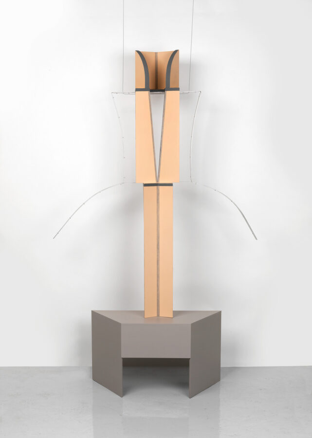

Brian Calvin, Maureen Gallace, Diane Simpson
Corbett vs. Dempsey is thrilled to present Brian Calvin, Maureen Gallace, Diane Simpson, featuring work by each of the three artists. Calvin and Simpson are CvsD artists and have exhibited extensively with the gallery; this is CvsD’s first exhibition with Gallace and her first commercial presentation in Chicago.
Quiet intensity. Methodical investigation. Attention to the meaning of materials, the signifying power of the slightest detail, and the rewards of deep observation and thoughtful consideration. Calvin, Gallace, and Simpson do not make work that looks like one another’s. Simpson is a sculptor; Gallace and Calvin are very distinct painters. But a core crossover connects them: the unwavering dedication to what their work might reveal. One might think of composer Morton Feldman or guitarist John Fahey or painter Giorgio Morandi, all of whom spent their artistic lives digging rather than ranging. Or composer Igor Stravinsky: “The more constraints one imposes, the more one frees oneself of the chains that shackle the spirit.”
The exhibition came together organically. CvsD invited Calvin, who in turn invited two of his favorite artists, one based in Chicago (Simpson), one in New York (Gallace). As the show came together, Calvin’s logic unfolded. Where on first blush his bold, graphically complex portraits might seem distant from Gallace’s sumptuous, softly palleted, gesturally rich landscapes and seascapes, in fact both artists are masters of facture, their sights trained on the riches revealed by a focused practice. Likewise, Simpson has spent five decades unpacking and retooling the way objects meet the eye, with her unique approach to visual perspective and her precise deployment and détournement of commonly available materials.
In Brian Calvin, Maureen Gallace, Diane Simpson, CvsD presents five works by Gallace, three of them immaculate beach scenes on paper and two paintings on board – a diaphanous house portrait in a spectrum of blue hues and a vivid image of flowers seen at close range. Calvin’s contributions include an imposing vanitas tondo in which the circle of the canvas is echoed by a bright pink hand-mirror, portraits with multiple figures sharing facial features, and several modestly scaled works painted on ceramic substrates. Simpson is represented by two classic, free-standing sculptures, both of which utilize fiberboard in the creation of wondrous works inspired by women’s clothing.